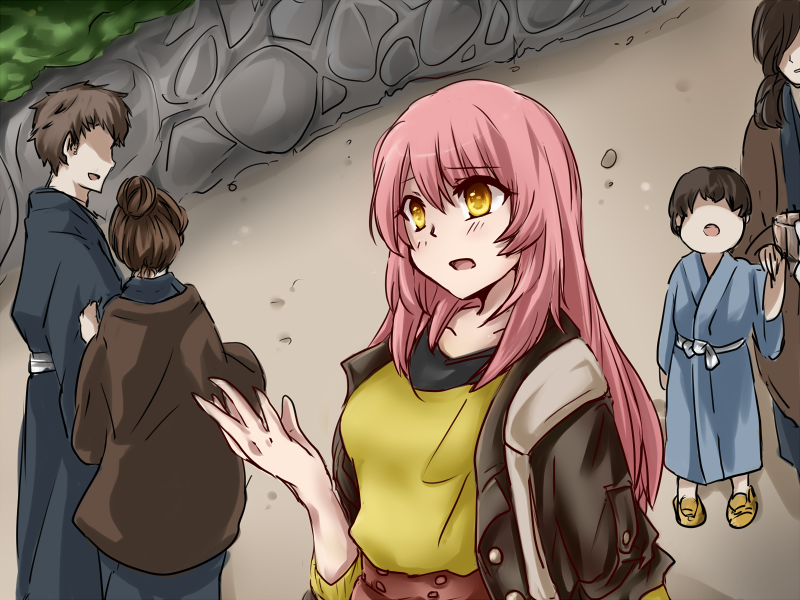
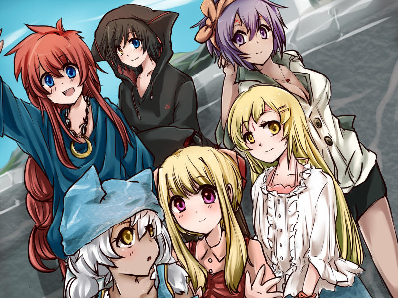
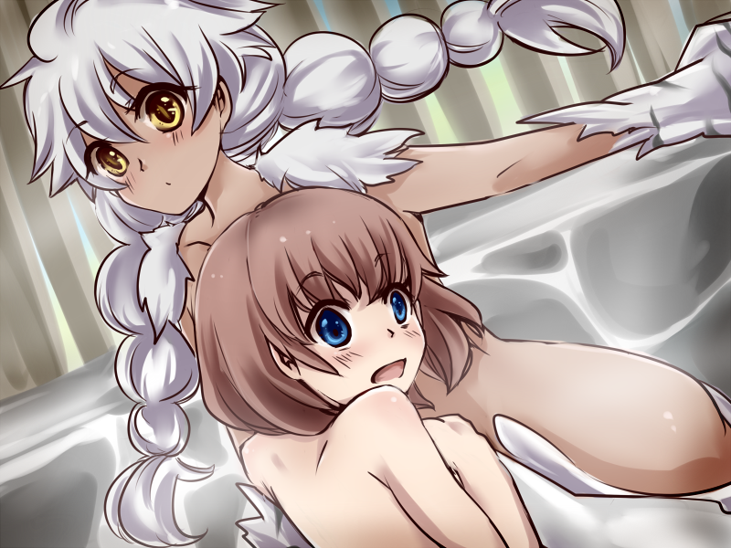
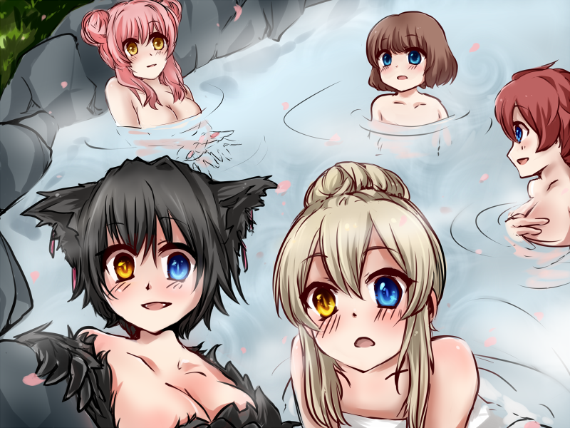
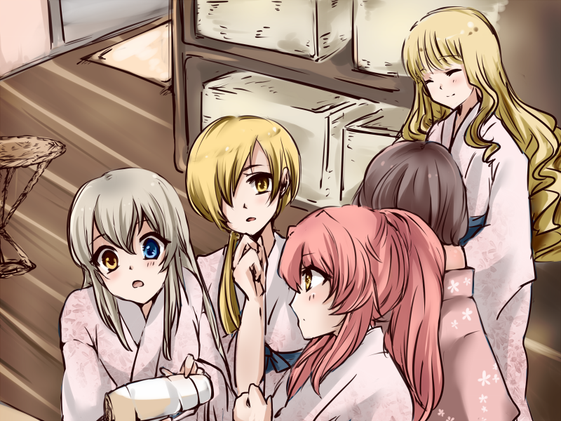
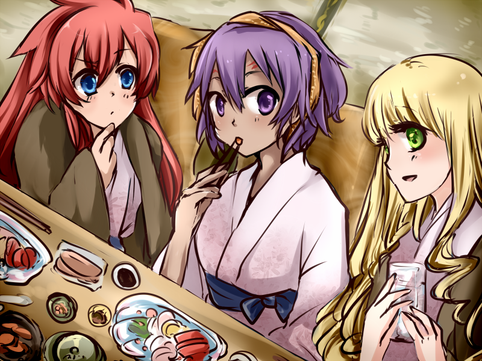
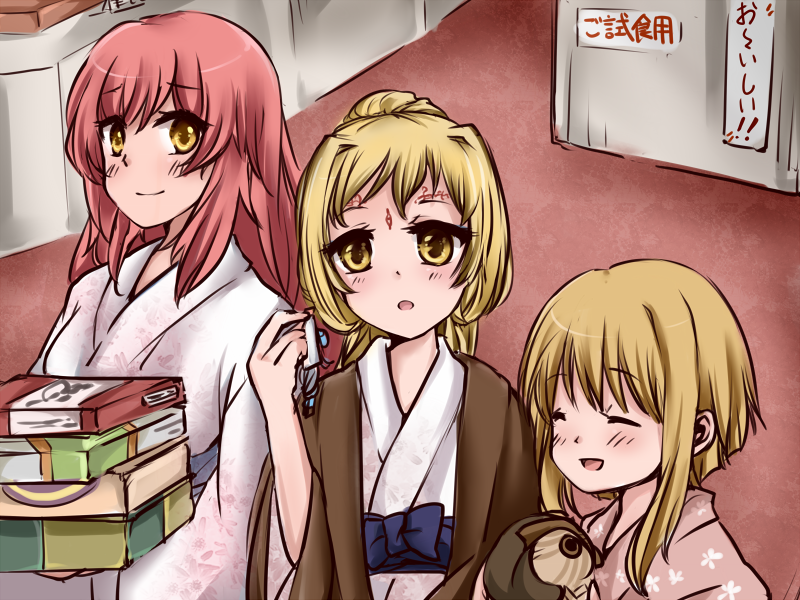
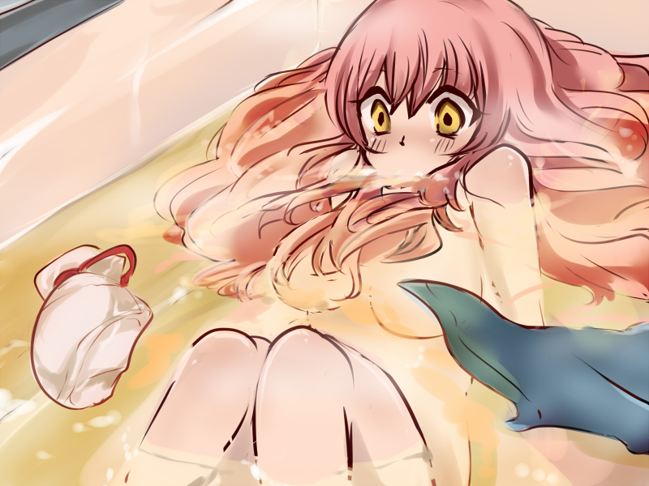

◆カメラ担当:メアリ

「えっと、ここは…？」
何所。なんて月並みな台詞を零す姿をアップにして映す。
鮮やかな色に染めた長い髪を揺らして、黄金色の両目を不安げに輝かせた女の子。
シャーリィや私と同年代くらいで、同性から見ても憧れてしまうくらいとても美人だと思う。
私と同じようにこちらに着いてすぐに一面に広がる青空に驚いて、行き交うオリエント風の装いの人たちに目を白黒させて。
そんな姿が手の平の機械の画面越しに見えている。
ちゃんと撮れてる？うん、大丈夫。
これ、この機械。ビデオカメラっていうこの世界の映像機器で、あらかじめ充填…じゃなくて充電？しておくことで手の平大のこの機械で
工学の知識に乏しい私にはよくわからないのだけれど。
私達のよく知る気晶画面の白黒と違って色着いたとても鮮明な画像がモニターに映っていて、どんな原理で動いてるのか本当に不思議。
魔法みたい、だなんて思ってしまう。
とと、いけない！見失っちゃう前に早く声をかけなきゃ。
「ネオンさん。ネオン・スカラさんで合ってますよね」
「えっ。あの、はい。そうですけど貴女は？」
「私、メアリです。メアリ･クラリッサ･クリスティ。突然のことで驚いてると思うのだけれど…とりあえず荷物、重いですよね。宿まで移動しながらお話したいのでついてきてもらっていいですか？」
不安そうではあるものの頷いてもらって、ここからそう遠くない道のりを歩き始める。
説明したり、初めての人と話すのはあまり得意な方ではないのだけれど。
「温泉旅行？」
「そうなんです。シリーズヒロインの皆さんで是非って言っていただいたみたいで、慰安旅行を企画していただいて。ええっと、そういった場合温泉が一般的だそうで。こちら側での服装や、旅行に必要な荷物なんかも用意していただいた状態で送っていただいたみたいですよ」
「あの…誰が？何の為に？」
そこに関しては私も企業秘密としか聞かされてなくて。
ええ、あまり深く考えないほうがいいわ。そういうの、よくない事な気がするの。
とにかく細かいことは察して下さい、ということみたい。
色々疑問に思うところはあるだろうけど今のところこの旅行の決まりごとは二つだけ。
みんなで仲良く楽しむこと。あとその様子をこのカメラで撮影すること。
◆カメラ担当:エリシア
説明を終えたあたりで合流した二人と私とリリィ、シャーリィで迎えて宿までの残り僅かな道のりを歩く。
カダスの方の子達は移動の関係で先に着いているみたいなので少し足早に進む。
宿泊予定の温泉旅館は都市部から電車を乗り継いで2時間ほどの観光業で成り立ってるような町。その旅館街にある一つといった場所で、大きくはないけれどそれなりに質もよく、宿泊客も私達だけでほとんど貸切状態らしい。
4月上旬はオフシーズンだから、と言っていたけれど少し都合が良すぎるような。
ええ、わかってます。深く考えてはいけないのよね。
玄関口までさしかかると先に到着していた彼女達の姿が見えた。

整った容姿ではあるのだけれど、この土地では少し個性が過ぎる彼女達を上手に隠した服装は馴染がないのだけれどよく似合っていると思う。
コニーとシェラは蒼がベースのカジュアルな格好で、シェラの目立つ耳や手足がファーのように上手く隠れるコーディネートになってる。
キーアとアティは二人とも赤色のスカートで女の子らしいチョイス。キーアの結い上げた髪をとめてるリボンやアティのプリーツスカートが春の風に揺れててそれがとても可愛いなと思う。
アナとクセルは二人とも白がベースなのにカジュアルな服を抜群のスタイルで着こなせてしまうアナと上品なシフォン生地のトップスがよく似合うクセルとで正反対なイメージで合わせてあるみたい。クセルは上品なのだけど下はデニムのロングスカートなのね。旅行に合うようにバランスよく組み合わせてあるみたい。
ちなみに、私やリリィは紫がベースの姉妹のような服で、メアリとシャーリィは黒のジャンパースカートやジャケットで少し大人に見える装いをしている。
ネオンはカナリア色のトップを上手に着こなしていて、皆見目がよいからなのかしらね。なんだか華やかで気後れしてしまう。
ところで選んである服の色はそういうことなのかしら。
そうね、自己紹介するのに色が一番わかりやすいものね。
もし知らない女の子がいて気になったら、その色を目印に探してみて欲しいわ。
皆、とても愛らしくて魅力的だもの。私達と私達が生きる世界をもっと知ってもらえるのはとても素敵だと思うから。
…誰に向かって何を言ってるのかしら、私。
何故か言わないといけない気がしたような。
「やぁーっときた！こっちこっち！手、振ってるの見えるー？」
蒼い服を着た赤毛の女の子。コニーがこちらへ向かって手を振る。
合流するなりあれこれと説明したり全員の簡単な自己紹介を促す姿から快活で、みんなを引っ張ってくしっかり者のタイプの印象を受ける。ヴィヴィのことを少し思い出す。
あまり人付き合いが得意とは言えない私のことを察して色々気を使ってくれるところとか、宿のチェックインを先に済ませておいてくれてる要領のよさとか。
「色々手間取らせてしまってごめんなさいね。短い間だけどよろしくお願いします」
「そんなかたくならなくていいって！ほら、カメラ代わってあげるからエリシアも皆と話しておいでよ。この旅行のルール、皆で仲良くなんだから」
そう言って私の手に持っていたカメラを持って輪の中に呼んでくれる。
そうね、ルール違反はよくないものね。今日一日、私もハメを外してめいっぱい楽しみましょう。
◆カメラ担当:コニー
宿についてまずは、と荷物を用意された部屋に置いて今回の旅のメインである温泉へ早速向かう。
お風呂は男湯と女湯で別れてて、時間によって入れる場所が変わるみたい。
今は丁度女湯が広くて新しい方みたい！うんうん。ついてる、ラッキー。
脱衣所は明るい色を基調とした開放的な場所で、いくつも並んでる棚に置いてあるカゴに着替えを入れておくみたい。
貴重品はお部屋に置いてきてくださいってのはそういうことね。
クセルとアナはまず顔や体のあの赤いお化粧を落とさないといけないのだとかで化粧室へ行ってる。
あれ、エキゾチックで素敵だけど毎日用意するの大変よね。私なんて普段からツナギにゴーグルだから余計にそう思っちゃう。
ところで、服を脱ぐときに気付いたんだけど着てた…その、下着？っていうのもこちら風のものみたい。
カダス式の下着と形はあんまり変わらないのだけれどデザインがちょっと、ええ、大胆？派手？
フリルやリボンがついてて女の子！って感じの。ちょっと恥ずかしい。シェラはあんまり気にしてないみたいだけど、まあ普段の服装が服装だしね。
空色の帽子が普段はむき出しのままの耳を覆ってる感覚が嫌だったのか着てた服をぽいぽいっと脱ぎ捨てて浴場の方へ走っていく。
「こらシェラ！！脱いだ服はこっちでしょ。皆ちゃんと畳んで入れてるじゃない」
「えー。だってお風呂出たらすぐ持って帰るんでしょ。一々畳むのめんどくさいよぅ」
「だぁーめ。他の人に迷惑でしょ。あと滑ると危ないんだから裸のままで走らない！」
「お風呂なんだから裸なのが普通だもーん！ね、マウマウ？ってそうだいないんだった。」
「他の人もいるんだから前くらい隠しなさいって言ってるの！」
あーいえばこういうのやり取りをしてる間に「お先に」って皆お風呂の方へ行ってしまう。
本当に自由奔放というか、いつもならいいってわけではないけどこんなところでくらいは大人しくなさいってば。
他の子達を少しは見習って！
「ってうわわわわ！！コニーなんで撮ってるの！！っていうかどことってるの！！」

「あ」
リリィの驚いた声にカメラを回しっぱなしだったことに気がつく。
画面にしっかり二人の姿が映ってる。
うわぁーやっちゃったー･･･。
さ、さっきまでの着替えとか全部映ってた？やだ、うそ。
消去しとかないと…って消し方わかんない！
映ってたらごめんね、みんな
口には出さず心の中で謝る。
大丈夫、大丈夫。言わなきゃばれないよね平気。
あーあ、本当ごめん。後で皆で見るとか…ないよね？ないと祈っておこう。
◆カメラ担当:シャーリィ
コニーが「向いてないみたい」と何故か落ち込んでいたので、温泉は私が撮影するわね。
入ってすぐの大浴場はサウナと水風呂が併設してある以外はあまり特徴的なものはなさそう。
つんとした硫黄の香りは天然温泉ならではなのかしら。慣れないけれど硫黄は美肌効果があるから別名《美人の湯》とも呼ばれるのよね。
そこは女の子として嬉しく思う。特にロンドンの煤煙に毎日晒されている素肌を思うと。
隅々まで綺麗に掃除されてるけれど、よく見ると欠けているタイルがあるから年季の入った施設なのかしら。
旅館の方も「うちは浴場も露天風呂も昔からの源泉掛け流しが自慢なんですよ」と言ってらっしゃったし、古きよき温泉宿というものなのでしょうね。
ガラス戸を引くと露天風呂に繋がっていて、転倒にお気をつけくださいと書かれた案内板を横目に外へと出てみる。
まだ昼間だから雲ひとつない空の青色が慣れていない私には刺さりそうなほどに眩しくて一瞬目を細める。
次の瞬間視界に広がったのは満開の桜の花が風に乗って大空に広がる･･･言葉に出来ないほど幻想的な景色だった。
私ったら柄にもなく舞い上がってしまって。温泉の向こう側にある上面が平らな岩に登って桜並木の間から空を覗いてみる。
淑女らしくないってわかってるのだけれど。桃色の木々の隙間から見える青空をどうしても見てみたいと思ったの。
「メアリ！！ねえメアリこちらへ来てみて！！！」
「どうしたのシャーリィ。子供みたいに大声を出して、貴女らしくない」
「来ればわかるわ。ねえ、とっても素敵よ。まるで本の中の世界みたい！」
露天風呂の方へ向かってきた皆の中にいる親友に声をかける。
普段はアーシェやメアリに立ち振る舞いを口うるさく注意する私がはしゃいでいるのが彼女にはとても新鮮みたいで。
「ママシャーリィは今日はお休みなのかしら？」と笑いながら湯をかき分けてこちらへ向かってくる。
「ねえ何があるのシャーリィ。ここから上を見上げるの？そしたら何が･･･！！」

湯船に浸かったままぽかんと口を開けたメアリを画面越しに見て思わず笑い声が漏れる。
すごい、と小さく声を出して空を見つめるその表情は湯によくあたってしまっているのかほんのりと赤い。
「ふふっメアリったら人のこと言えない表情よ。ね、アティ？」
気になって一緒に来たらしいアティにそう問いかける。
ネコの毛が湯船に浮かぶのがどうにも心苦しいみたいでしっぽや足はどうしようもないけどせめてって手を手前に出した状態でいる。
アティの毛並みは長いし髪の毛と同じだと思えば、それでもマナー違反ではあるわよね。
でも寒くないのかしら？気になったけど大丈夫みたい。
中の大浴場の湯加減はプセールの彼女には合わなかったらしく、こちら側の温泉の端の方で岩肌にあたってるくらいがむしろ丁度いいよう。
こちらは日差しがあるし４月でもロンドンと比べれば夏のように暖かいから大丈夫だとは思うけれど風邪をひいてしまわないか少し心配に見えてしまう。
「え、ああ、うん。メアリはたしかに驚きすぎ。だってじゃない…でも無理ないさね。ほんと絶景だもん。でさ、景色は本当に最高なんだけどシャーリィ？撮ってる？普通に撮ってるね、さっきあんだけ大騒ぎしてたのに」
「気にしなくてもこちらもよい景色よ？それに、ええ大丈夫。湯煙でほとんど見えやしないわ」
ほんとーに？と言って訝しむアティに「ならここから先は撮りません！」と撮影停止のボタンをタッチして、私も湯船に浸かりなおすことにした。
◆カメラ担当:アティ
十分温まって肌もすべすべになった頃合を見て温泉から出ることにして、宿が用意してくれた服、浴衣？を着ることにした。
白地に桃色の花の模様が散りばめてあって、女性らしいデザインってかんじ。男の人用だとまた違うのかな？
火照った体に丁度よい肌触りで締め付けもなくて着心地がとてもいい。
「肌寒いのでよければこちらも」と茶色で少し厚手の上着を貰ったけど私は必要ないかな。

「で、お嬢さん達は一体何をそんなに気にしてるわけ？」
三人団子になってなにか話してる様子をカメラに映す。
あーでもないこーでもないってやけに真剣そう？
「これ、ドライヤーっていう温風があたる機械なのだけどどういう仕組みなのかしらって話をしてて。私は工学に疎いのだけど二人は専門で学んでるみたいだから意見を聞いてみたの」
「こちらでは機関じゃなくて電気で機械が動いてるっていうのはわかるのだけれど、この長いコードを介して動力を供給してるのよね？廃熱処理はここからしてるとして…エネルギーの変換は、分解しちゃダメかしら？」
「だめだめ！だめですよ宿の備品なんですから！私ももっと勉強ちゃんとしてればわかったのかもしれないけれど。電気機械…マスターならわかるのかな？」
なるほど、未来を担う碩学の卵たちにはこの世界の技術はどこを見ても不思議の塊のよう。私はそういうのよくわかんないけど。
仕事に関係のないとこの分野に関してはからっきしだもんね。便利ならいいやで済んじゃう。
というか碩学さま、いるじゃん。ものすごく頭のいい碩学のお姫さま。あれ？もういないの？
どうやら私達を置いてみんな脱衣所から出て行ってしまったらしい。あらら。
残ってるのは目の前の三人とリリィとシャーリィも？
「リリィは大人用の浴衣だと少し大きかったみたいで、旅館の方に言って小さな方を持ってきてもらってたの。」
キーアは最初から子供用を貰ってたみたいなんだけど成長期の子供だとちょっと判断がつきにくかったみたい。
でも大人用の浴衣だと裾を引きずるけどせっかく用意してもらった子供用も少し短いくらいの微妙なところだったらしい。
「こっちの方が可愛いけど裾、ちょっと足りてない。足見えちゃってる」
「あら、踏んで転んでしまうよりはいいじゃない。それに白よりこちらの色の方が貴女には似合っていてよ？ね、小さな淑女さん」
むうっと不満げなリリィを上手になだめるシャーリィ。上手いもんだね、あの年頃の女の子ってどうにも扱いが難しいのに。
「きっとアーシェ…私達の友人と似てるからだと思うの。シャーリィったらお姉さんぶって私達に世話を焼くのが癖になってるから」
感心してる私にメアリがそっと耳打ちする。なるほどね、慣れてるのか。道理で。
リリィの着替えが終わるのを待って、私達も先に出て行った皆を追いかけることにした。
◆カメラ担当:キーア
お食事の準備ができました、と声をかけてもらったので案内された部屋へ合流したみんなで一緒に向かったの。
通された場所は人数を考えても十分なほどの広さの個室で、客室と同じように藺草の香りが素敵なお座敷。
人数分の座椅子に座布団というクッションを敷いてもらってあってみんな好きな場所に座る。
本来は正座に慣れてないとたいへんらしいのだけれど、堀りごたつ式テーブルというの？足が下に伸ばせるようになってて不慣れな私達でも快適に食事ができるようになってるみたい。
地元の海の幸を使った会席料理でございます、と机いっぱいに広がったたくさんの料理に思わずすごいと呟いてしまう。
ただそっちは大人用で味付けが独特だったりたくさん食べられない私たちには子供向けのメニューが用意されてたみたい。
大きなエビフライにハンバーグ。もちろんサラダもあってデザートももついてて真ん中には型抜きされたチキンライスがバランスよく盛り付けられたワンプレート。
ライスの上には可愛い旗が挿してあるの。食べ物に旗を挿す意味はよくわからないけれど、不思議とわくわくしてしまう。
「すごいね。色んな料理が一つのお皿に乗ってる。こんなの初めて！」
「リリィ、こぼすといけないからこのナプキンをかけてね。あまり一度に食べ過ぎてはだめよ。喉に詰まったら大変だもの」
目を輝かせて出された料理を頬張るリリィにエリシアはつきっきりみたい。
自分の方の料理を指差して「食べたいものがあるなら言って」とか「海老の殻剥いてあげるわね」とか。
仲のいい姉妹というか、お母さんと子供のよう。
「一人で食べれるよ！」ってリリィがぷりぷりと怒ったら「あら？いつもAはこうしていたみたいだけれど？」と返されてむむむと唸ってる。
なんだかエリシアはとても楽しそう。リリィも本気で怒っているわけじゃなくて甘えているだけみたい。
カメラを別の場所に向けるとコニーとアナとシャーリィの三人が映ったの。
三人とも頼れるお姉さんってかんじだから、こうやって並んでいると大人の女性らしさが特に際立って見えてほうっとなってしまう。

「美味しい！魚を生で食べるのって抵抗があったのだけれど、彩りもとても芸術的で見ていて素敵だわ。ドナに今度作ってみてもらおうかしら」
「私も料理はするけどどうしてもありあわせのものをとか手早く美味しくてっのに偏ったりするからこんな繊細な切り方って普段見なくて参考になるわ。でもちょっと食べるのが勿体無いかも～」
「ええ、その気持ちよくわかるわ。そうだ、篆刻写真に…ってここでは撮れないわよね。残念だわ」
「格安の女子会プランって聞いたけど実際かなり豪華よね。ねーねー。ここだけの話さ、この旅行本当なんなわけ？私達みたいに目立つ団体が都合よくほぼ貸切で泊まれる普通？それに」
さっき温泉に入った時もなんにも言われなかったんだけど。普通どう考えてもダメだよね、まあ何がってネコの耳とかしっぽとか。
とアナが続ける。温泉って色んな決まりがあるみたいで、体に模様があると入れなかったり病気の有無だったり、入浴の方法も守らないと入れてもらえないものなのですって。
「一応この会の現場の幹事コニーらしいって聞いてるし」
そこんとこどーなんてんのぶっちゃけ。と、声を小さくしてアナがコニーに聞いたわ。
コニーの方は聞かれるのが分かってたみたいで別になんてことないって様子で説明しだしたの。
「ばれてたか。と言ってもべつにやましい事があるわけじゃないんだけどね。こちらの世界も色々世知辛いみたい？あんまり食事時に話すようなことではないんだけれど」
曰く、数年前の法改正で旅館やホテルの耐震基準を徹底調査して可をもらわないと万が一のときの保障がされないことになったらしいの。
営業を差し止められるわけではないのだけれど、旅行会社さんに仲介してもらうときに審査に通ってないと商品として売れないとかで古い旅館はどこも経営の危機なんだとか。
「改修して赤字分を取り戻すには景気が悪すぎるって理由で採算とれなくて旅館街まるごと潰れちゃう地域とかもあるらしくて、古きよき温泉宿ってのがこれからどんどん姿を消してくかもなんだって」
そう聞いたらものめずらしくなっちゃう前に泊まっておきたいものじゃない？と続けるコニー。
「私達の世界も大変なことばかりだけれど、こちらはこちらで苦労が絶えないのね」
話を聞いて神妙に頷くシャーリィ。たしか有名な資産家のお嬢さんだったと聞いたし、何か思うところがあるのかも。
「つまりこの宿…ええ、そうね。食事中にする話でもないわね。さ、冷めないうちにいただきましょう」
大人の話って難しくてよくわからないわ。
そう思って撮影もそこそこに美味しいお料理に舌鼓を打つことに戻ったの。
◆カメラ担当:アナ
食事も終わって一息ついて、自由に散策しようって話になったからカメラを持って館内を回ってみる。
おすすめされた夕景や卓球という温泉にはつきもの（？）のスポーツを楽しむ様子をカメラに収めていく。
卓球、楽しそうだけど私が参加するのはちょっとフェアじゃない気がする。
そういうの気にする子達じゃないってわかってはいるのだけれど、アティが打ち返したピンポン玉がそれはもうべっこりと半円状に潰れてしまったのを見たらね。
リリィが「すごいね、すごい力持ち。ネコの人って皆そうなの？」なんて言って目を丸くさせてたけど、プセールの彼女でそうならアデプトが本気で打ち返したらきっと壁に穴を開けてしまうくらい簡単そう。
いや、しないけど。しないけどね。
そうやって館内をぐるりと一周まわって、ロビー付近のおみやげ物を取り扱ってる売店を覗いてみたらなかなか珍しいなと感じる組み合わせの三人を見つけた。

「あらアナ、撮影担当お疲れさま。」
「いいっていいって。けっこう楽しいし、こうやって画面越しに見てみるとまた違った風景に見えるのよね。なんでだろう、不思議」
「そうなの？不思議といえばこれもなの。おみやげ物の定番と聞いたのだけどどうしてフクロウなのかしら？とっても可愛いからかしら」
そう言ってコロコロと笑うキーアの手には木彫りの梟の置物がある。
言われてみればたしかに愛嬌のある顔立ちをしている。なんで梟なのかは私にもわからないけれど。
「クセルがお土産はその土地のことが分かるようなものがいいってアドバイスをくれたのだけれど、たくさんあって悩んでしまうの」
「ええ、一般的には旅の思い出の品になるようなものがよいとされているみたい。妾もアスルに何か送りたいと思って見てるのだけれど、男の子への贈り物って難しいわ」
そういって仲良く悩む二人。こう、なんか二人ともいいところのお嬢さんってかんじで合ってるよね。
というか、ネオンもそうだしここにいない人たちを考えても大半から育ちの良さが出ているというかなんというか。う～ん、もうちょっと私も見習うべき？
「男の子なのだし可愛いものよりかっこいいものがいいと思うけれど…これは何かしら？きーほるだーとすとらっぷ？」
「なくさないようにつける飾りみたいね。値段もお手ごろで無難なかんじ」
手にしたキーホルダーを男の子ってこういうのが好きなのかしら？の目で見つめるクセル。
キーホルダーは西亨風の剣にドラゴンが巻きついていて小さなガラスが一つ飾りに組み込まれたもの。
きっと誰しもが「ああ、サービスエリアとかで売ってるあれか」とわかるあれ。たまに勾玉だったり、女の子向けのは何故かイルカがモチーフだったりの、地域性の欠片もないやつ。
「でもアスルの趣味ではないかなーたぶん。あんまり実用的じゃないものは持たない子だし、いっそ食べ物とかでもいいかも。一緒に食べながら楽しかった思い出とか話すだけでもいいお土産だと思うし」
カシムにも何か買っていこうかなって思う。
問題はここでは正常を保ってる味覚が、帰ったときにどうなってるかわからないことなんだけど。
私の案は愛らしいお姫さまもお気に召したようでぱあぁぁっと笑顔になる。本当に可愛い。キーアも隣で一緒になって喜んでるのがなおさら可愛いったら。
「そうね、とてもよい考えだわ。ネオンがあちらで食べ物を選んでたからよさそうなものを聞いてみましょう」
「クラスの皆にはこっちで、部活関係でお世話になった人にはこれとこれ･･･統治会の方々にはー」
食べ物のコーナーで選んでるネオンを見てみると顔が隠れるんじゃないかってくらい箱を積み上げててびっくりした。
持ってるのは箱詰めのお菓子が大半で同じものを複数持ってたり、とにかくすごい量。
それ全部買うの？本当にずいぶんな量だけど。
「ネオンはご友人がとても多いのね。素敵なことだわ」
「ええ本当！でもそんなに持ち帰られるのかしら？帰りが大変そう」
うん。私もそう思う。
私達に見られていたことに気付いたネオンが恥ずかしそうに笑う。
「ええっと友達、というかお世話になってる人たちにって考えるとどうしても多くなっちゃって」
「ネオンは学生さんなのだったわね。妾には経験がないのだけれど、同じことを学んでいくお友達がたくさんいるのはなんだか羨ましいわ」
「それもあるんですけど、うちの学園は色々特殊だから人付き合いってわりと重要で、特にうちの部はマスターが色々と･･･あ、マスターにも何か買っていかなくちゃ。急に家事を休んで外泊してしまってるのだし」
都市まるごとが学校なんだっけ、すごいよね。
でもなんだろうこの、学生の若々しさというより妙に所帯じみたこの…
「学生さんというよりむしろ旦那さんを立ててる奥さんみたいだわ。私もアティを呼んできてギーへのお土産を選んだほうがいいかしら」
そうそれ！絵に描いた良妻ってかんじ。
貰い物のお返しとかなんやかんやを何にも気にしない旦那のかわりに全部選んで買ってそうな。
キーアはそう言ってアティを探しに行ってしまったみたいで、残されたネオンを見ると耳が赤く染まっていた。
「奥さん…他の部の人にも言われちゃってるけどあんな小さな子に言われると」
「意識して照れちゃう？」
うんうん。と首を立てにふるネオン。いいね、キラキラしてる。まさに恋してますってかんじ。
「で、旦那さまへのお土産選ぶにしてもさすがにそれ以上持てないでしょ。部屋まで持ってってあげるからゆっくり選びなよ」
「そんな、悪いです。ええっと･･･あ、じゃあ撮影代わりますから、荷物置いてもらったらアナさんも好きに観光してください」
「べつに気にしなくていいのに。でもそう言ってもらえるならお言葉に甘えようかな。」
これといって見たいものがあるわけではないのだけど気にし屋さんのようなので素直に荷物とカメラを交換することにした。
◆カメラ担当:ネオン
受け取ったカメラを手に持ってディスプレイの録画部分をタッチする。
「これでいいのかな…あれ？画面真っ暗なままだけど、もしかして壊れちゃったとか？そうだったらどうしよう。」
さっきまで皆が撮影してるときは普通だったのに私が録画しようとした途端に動かなくなってしまったみたい。
どうして、と動揺する私は気付かない。
暗い画面を覗き込む黄金色の瞳が輝きを増していることに。
「なんで見れないんだろう。これ、きっとすごく高いよね」
見えない？―
《原因/電池残量》
残量･･･もうすぐ切れちゃうってこと？
でも一日中動いてても平気だったのに、急に何故。
見えない？―
《もうすぐ明日》
日付が変わると使えない？
使えるのは今日一日だけ？
見えない？―
《全部嘘》
「《全部嘘》エイプリル･フール？嘘って、何が」
画面越しに見えてくる意味を理解するのに思考をめぐらせる。
でも次の瞬間に視界ごと揺れはじめて世界が歪んでゆく感覚に襲われて意識が薄れていく。
まるでそう、湯船の中に沈んでゆくように
《発動/真実暴露》

「すぅ…すぅ…ブクブクッ！？？ふわあっ！！」
息苦しさに驚いて起きあがる声が響く。
ここは、どこ？ええっと、うん。いつもの家のお風呂場。
二人暮らしには十分するぎるくらい豪奢な湯船と、英国風の綺麗な装飾が特徴的なタイル張り。もう見慣れた景色。
「私もしかして寝ちゃってた？湯船の中で…ない、ありえない。しっかり夢まで見ちゃってて」
ヒノキで出来たすのことか、硫黄のにおいのする源泉とか、もちろん青空に桜吹雪が舞う露天風呂とかじゃなくて。
とても強かな大人の女性達や、お人形さんみたいに可愛らしい女の子、イズミと同じプセールの姿の人、私のような黄金色の瞳を持つような人たちもいない。私一人でお風呂に遣ってる。
夢。ほんと、嘘みたいな夢。そう、嘘。
「今日はエイプリルフールだものね」
そう。学校は年度が替わるまでの休暇中で、マスターは朝から『四月馬鹿』で浮かれてる学生達にお灸を据えるとかでいなくって。
せっかく４月１日だしフランス風にって思って魚の形をしたパイやチョコレート菓子を作っていたら思いのほか汚れてしまったから昼間からお風呂に入ってたんだった。
疲れて帰ってきた彼の為にとそれはもうずいぶんな量を作ってある。
作りすぎかなって思ったけどマスター、甘いもの好きだものね。
食べ切れなければイズミ達にお裾分けをしてもよいのだし。
「パイ、そろそろ冷めてるよね。新鮮なベリーが手に入ったしそれを飾って」
二人でお茶をしながらさっきの嘘みたいな夢の話でもしよう。
きっと、お風呂で居眠りなんてだらしないって怒られてしまうだろうけれど。
そしたら「なら私が寝ちゃわないように一緒に入って？」くらい言ってみる？今日はエイプリルフールだし便乗しちゃう？
大胆すぎかな、でも一応そういう仲なわけだしこれくらいの冗談ならいいよね。
お風呂はあまり好きではないらしいけれどやっぱり湯船に浸かるのって気持ちいいもの。
一緒に入る…田舎暮らしの私には縁遠かったけどハンガリーの首都の方にはたくさんの温泉があるし、混浴も盛んだと聞いたことがある。
温泉旅行、二人で行ってみるのもいいかもしれない。
帰ってきたら誘ってみようかな。それこそ冗談だと思われちゃうかも？
「ってお湯もすっかり温くなっちゃってるし。そろそろあがらないと」
まだまだ寒さを感じる４月の気温を思ってあたたかな湯船に名残惜しさを感じながら、僅かに残る湯煙を潜り抜けていつもの日常へ戻った。
＜おしまい＞